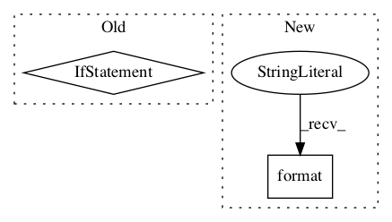

d90f5580d932b801ea3a9715d0dee00fc58ab55a,research/deep_speech/deep_speech_model.py,,_rnn_layer,#Any#Any#Any#Any#Any#Any#Any#,57

Before Change
rnn_layer = rnn_cell(
rnn_hidden_size, activation=rnn_activation, return_sequences=True,
name="rnn_{}".format(layer_id))
if is_bidirectional:
rnn_layer = tf.keras.layers.Bidirectional(rnn_layer, merge_mode="sum")
return rnn_layer(input_data)
def _ctc_lambda_func(args):
After Change
// Construct forward/backward RNN cells.
fw_cell = rnn_cell(num_units=rnn_hidden_size,
name="rnn_fw_{}".format(layer_id))
bw_cell = rnn_cell(num_units=rnn_hidden_size,
name="rnn_bw_{}".format(layer_id))
In pattern: SUPERPATTERN
Frequency: 3
Non-data size: 2
Instances
Project Name: tensorflow/models
Commit Name: d90f5580d932b801ea3a9715d0dee00fc58ab55a
Time:
Author: null
File Name: research/deep_speech/deep_speech_model.py
Class Name:
Method Name: _rnn_layer
Project Name: tensorflow/agents
Commit Name: b5ae1c6bde39f5130c975992198f1f8ee5200f9a
Time:
Author: null
File Name: tf_agents/agents/dqn/dqn_agent.py
Class Name: DqnAgent
Method Name: _check_action_spec
Project Name: tensorflow/agents
Commit Name: b5ae1c6bde39f5130c975992198f1f8ee5200f9a
Time:
Author: null
File Name: tf_agents/policies/categorical_q_policy.py
Class Name: CategoricalQPolicy
Method Name: __init__